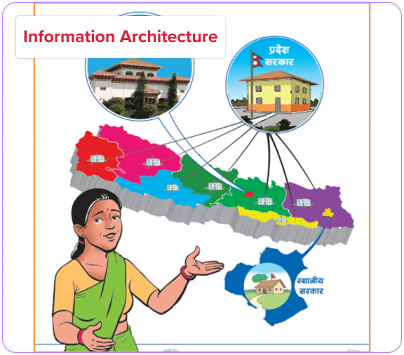
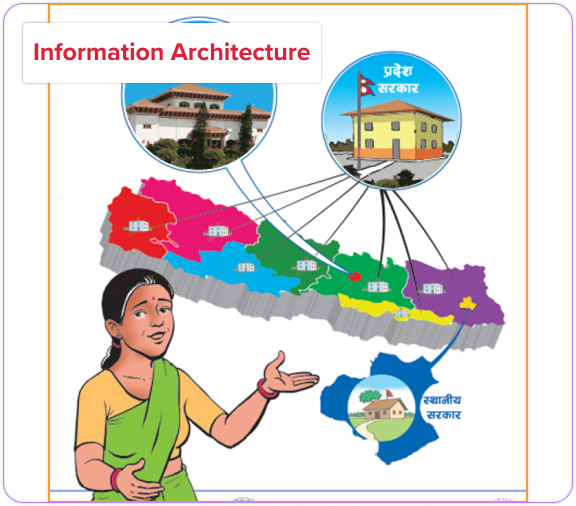

She Leads Nepal
Empowering Elected Women Representatives in Local Governance (Nepal)

Industry
Civic Engagement | Education
Role
Product Designer
Team
Collaborated with IFES and CDWN teams, senior designers, and program officers
Duration
2 years
Approach
User-centered Design
Tools
Figma, Canva, Adobe Illustrator
Challenge
Women elected for the first time in decades faced barriers in leadership, communication, and governance due to societal norms and the pandemic. The challenge was to create a clear, inclusive, and engaging design experience that supported their learning journey and built their confidence in leadership roles. Many came from underrepresented communities like Dalits. Clear, culturally aware design was needed to engage and empower them effectively, even during a pandemic.
Solution
Through human-centered design principles, we helped transform complex political structures, leadership theories, and gender inclusion topics into visually clear, interactive, and culturally appropriate materials. We adapted rapidly to COVID-19 realities, ensuring that training could continue both virtually and safely on-site. Visual storytelling, simplified diagrams, resilience-building activities, and continuous feedback loops helped deliver an impactful learning journey.
Result
Empowered 472 elected women leaders in Nepal through accessible, inclusive design that boosted leadership confidence and engagement.
Project Overview
After Nepal’s historic 2017 local elections, more than 14,000 women, including 7,000 Dalit women were elected to public office, many stepping into leadership for the first time. Recognizing the urgent need for support, She Leads Nepal was launched by the International Foundation for Electoral Systems (IFES) in partnership with the Center for Dalit Women Nepal (CDWN). The project aimed to strengthen the capacity of newly elected women representatives especially Dalit and marginalized women to meaningfully participate in local decision-making and lead with confidence.
Getting Started
She Leads Nepal emerged as a powerful response to the 2017 local elections in Nepal, which saw a groundbreaking number of over 14,000 women step into local government roles, many for the first time. The program aimed to transform these women’s roles from passive representatives to active decision-makers in governance, focusing particularly on women from Dalit and marginalized communities. As a Product Designer, I was excited to contribute to this historic initiative by creating visually engaging and culturally sensitive learning materials. My work involved designing easy-to-understand visual assets, developing illustrated governance guides, and crafting interactive worksheets that covered essential leadership skills such as resilience, public speaking, and decision-making. With the onset of the COVID-19 pandemic, I also played a key role in adapting these materials to ensure they were accessible and relevant in a remote learning environment. Collaborating with trainers and senior designers, we ensured the materials were not only informative but also inclusive, helping these women build the confidence and knowledge necessary to embrace their new leadership roles.
My Contribution
As a Jr. Product Designer, I focused on designing the full experience journey for our primary users, elected women representatives (EWRs) ensuring every touchpoint, from training modules to visual aids, was intuitive, accessible, and empowering.
Key Contributions:
- Developed clear, user-friendly training materials and illustrated guides, applying principles of information hierarchy and visual clarity
- Designed interactive worksheets that prioritized user engagement, promoting leadership, public speaking, and resilience-building
- Simplified complex political structures into intuitive, visual information flows to support learning for first-time leaders
- Adapted the training experience for remote delivery during COVID-19, ensuring content accessibility across in-person and virtual sessions
- Collaborated cross-functionally with trainers, program officers, and senior designers to conduct feedback loops and iterate on design materials
- Applied accessibility and cultural sensitivity standards to all designs, ensuring relevance across diverse user groups
Research and Analysis
To ground our design decisions in user needs, we conducted:
-
User Interviews
Engaged with women representatives to understand their struggles with governance processes, public speaking, and digital learning.
-
Contextual Observation
Attended live training sessions to observe how participants interacted with learning materials and facilitators.
-
Data Synthesis
Identified key patterns around accessibility, language barriers, and confidence gaps in public engagement.

User Personas & Journey Mapping
For She Leads Nepal, we developed user personas based on insights from interviews and research, helping us understand the goals, challenges, and motivations of women aspiring to leadership roles. This informed the design of a tailored experience for their needs. Additionally, we created a user journey map to visualize the entire experience, from discovering the platform to post-program success, ensuring we addressed key touchpoints and improved the user experience throughout the process.
Ideation & Concept Development
In the ideation and concept development phase for She Leads Nepal, we brainstormed and explored various ideas to address the specific needs of women aspiring to leadership positions. By collaborating as a team, we generated multiple concepts and refined them based on user feedback and feasibility. This helped us identify the most impactful features and solutions, which we then developed into a clear concept for the platform, ensuring it aligned with both user needs and project goals.
 

Illustrations
In designing the illustrations, we focused on representing a wide range of women leaders from diverse backgrounds, including different ages, ethnicities, and abilities. This was done to foster inclusivity and help participants see themselves reflected in the materials. The illustrations highlighted women in various leadership roles, showcasing their strength, resilience, and potential. By using diverse imagery, we ensured that the materials resonated with the participants and empowered them to step into their leadership roles with confidence.


Visual Design & Story Telling
As part of the “She Leads” training program in Nepal, I designed a set of visual assets that helped bring the program’s goals and impact to life. These visuals were created to strengthen communication, highlight representation, and build emotional connection with participants and audiences. The assets were used across:
- Training materials, where scenes depicted real-life challenges like navigating governance during COVID-19.
- Community assignments, helping representatives communicate with local citizens about safety and inclusion.
- Promotional and storytelling content, visually reinforcing the message that women from all backgrounds—Dalit, disabled, elderly, rural—belong in leadership.
Each image captures a specific moment or message. Through thoughtful composition, expressive body language, and inclusive representation, the illustrations helped bring the program’s core values to life.
“My goal was to create visuals that felt grounded, human, and representative something participants could see themselves in and feel proud of.”


Results
- 472 elected women representatives completed the full first round of training with improved leadership, governance, and public speaking skills
- Participants reported greater confidence in voicing opinions during municipal meetings and policy discussions
- Local leaders and family members demonstrated growing support for women’s participation after community sensitization activities
- The project set a national example for inclusive, gender-responsive local governance training programs
Reflections
Contributing to She Leads Nepal was a deeply meaningful experience that strengthened my commitment to human-centered, inclusive design. It taught me the power of design not just as a tool for education, but as a catalyst for social transformation. I learned how to collaborate across international teams, design for marginalized communities, and ensure that accessibility, cultural sensitivity, and resilience are embedded into every touchpoint. I learned to design not just for screens, but for real-world learning experiences ensuring that accessibility, clarity, cultural empathy, and user empowerment stayed at the heart of every design decision.